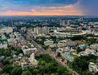

Indore is the largest and most prominent city of Madhya Pradesh and is widely known as the commercial and cultural capital of Central India. The city has a rich historical background that dates back to the Holkar dynasty, which has left behind magnificent architectural landmarks such as Rajwada Palace and Lal Bagh Palace. Indore successfully blends its royal heritage with modern urban development, offering a unique experience to visitors. The city is also famous for its vibrant culture, traditional festivals, and warm hospitality, which reflect the true spirit of Malwa. In addition to its historical importance, Indore is recognized as a major educational and industrial hub, contributing significantly to the growth of the region. The city has consistently been ranked among the cleanest cities in India, showcasing its excellent civic sense and infrastructure. With its heritage monuments, lively markets, delicious street food, and growing tourism facilities, Indore attracts travelers from all over the country and continues to be a symbol of progress rooted in tradition.